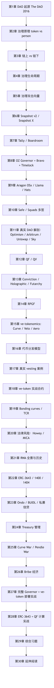
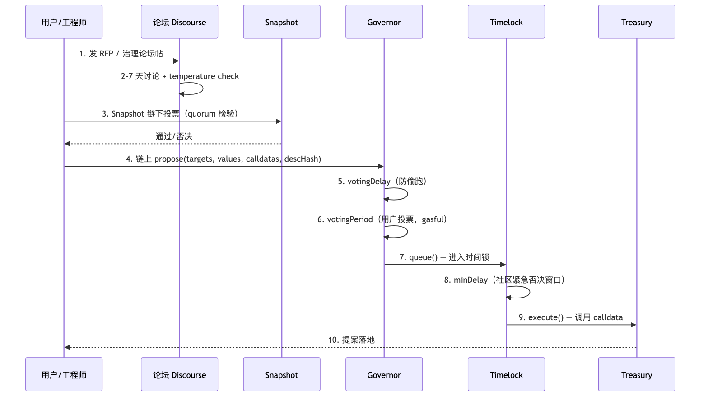
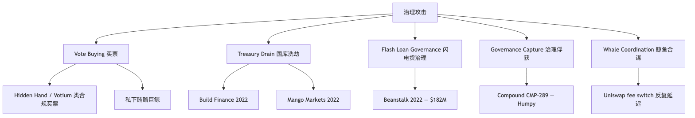
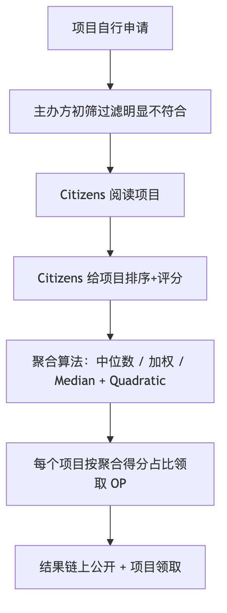
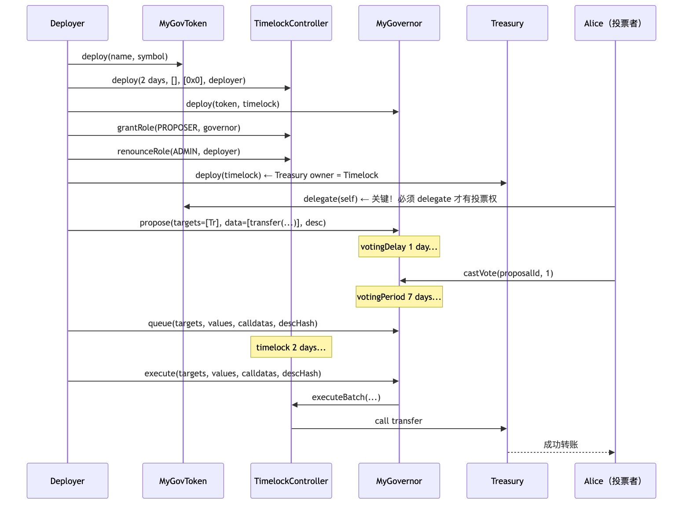

DAO 治理 + 代币经济学 + RWA 三件事的工程视角。前置：模块 04 Solidity、05 安全、06 DeFi、14 去中心化存储。所有协议数据、TVL、监管时间表为 2026-04 快照。

DAO（Decentralized Autonomous Organization）= 一组合约 + 一个代币 + 一个时间锁。提案即 calldata，章程即字节码，国库 = address(this).balance。区别于公司章程的三件事：组合（一份提案可同时调 Aave/Uniswap/Lido）、无许可投票（持币即投权，无 KYC）、合约执行（票数达标后由 timelock.execute 自动落地）。
The DAO 是 2016 年 4 月上线的去中心化风险投资基金（Slock.it 编写），28 天众筹吸纳约 1150 万 ETH（~1.5 亿美元，占 ETH 总流通量 14%）。来源：The DAO Wikipedia。
致命漏洞：splitDAO() 先发送 ETH 再更新余额——典型重入漏洞（详见模块 05 第 2 章）。
// The DAO 的 splitDAO 简化伪代码（带漏洞）
function splitDAO(uint256 proposalId) public {
uint256 amount = balances[msg.sender];
// 缺陷 1：先转账（recipient.call.value 触发对方 fallback）
msg.sender.call.value(amount)("");
// 缺陷 2：转账成功后才清零
balances[msg.sender] = 0;
}
攻击者的恶意合约在 fallback 中递归调用 splitDAO() 约 30 次，抽走约 360 万 ETH（~5000 万美元）。
社区分裂： - 回滚派（Vitalik、基金会）：不还钱则以太坊价值结算可信度崩盘。 - 不回滚派（"Code is Law"）：回滚 = 中心化干预 = 摧毁不可篡改性。
最终 2016-07-20 block 1,920,000 硬分叉回滚，少数派延续原链成为 Ethereum Classic（ETC）。来源：CoinDesk、Gemini。
教训三条：① ETH 转账必须 checks-effects-interactions + ReentrancyGuard；② 合法性最终在社会共识——极端情况硬分叉会赢过"code is law"；③ 代币 + 投票 ≠ 治理：无时间锁、无紧急刹车的合约 = 自动化赌场。
| 年份 | 事件 | 教训 |
|---|---|---|
| 2016 | The DAO 上线、被黑、ETH/ETC 分叉 | reentrancy 真实代价 |
| 2018 | MolochDAO 诞生（极简治理 + ragequit） | 简单 = 安全 |
| 2019-2020 | Maker、Compound、Uniswap 推出代币治理 | "把协议交给代币持有者" |
| 2021 | Curve War 爆发，veCRV bribes 兴起 | 治理权 = 经济权 |
| 2022 | Build Finance 治理被收购 / Beanstalk flash loan 攻击 | 链上即时投票 + 闪电贷 = 灾难 |
| 2023 | Optimism Citizens House RPGF 启动 | 治理可以二院制 |
| 2024 | MakerDAO → Sky、Compound CMP-289 鲸鱼"governance attack" | 巨鲸投票合法性危机 |
| 2025 | EigenLayer slashing 上线 / Optimism Futarchy 试验 | 预测市场进入治理 |
| 2026 | Tally 关停，DAO 工具基础设施洗牌 | 监管+市场结构演变 |
来源：CoinDesk。
社区层 Discourse/Discord/论坛 温度测试，无链上效力
投票层 Snapshot/Snapshot X EIP-712 签名 + IPFS，gasless
执行层 Governor + Timelock 链上 calldata，多数通过 → 排队 → 执行
资金层 Treasury/Safe/Timelock 合约持有，调用须票或多签
读 DAO 源码先问三件事：权限挂在哪一层？谁有 role？被谁约束？
splitDAO() 的函数，按代码规则它的行为合法。如果你是 2016 年 7 月的核心开发者，你会投票支持硬分叉还是反对？写出你的两个最强论点。| 模型 | 权重 = | 用例 | 弱点 |
|---|---|---|---|
| 1T1V | 代币余额 | Uniswap、Compound、Aave、Sky | 51% 代币 = 100% 控制 |
| 1P1V | 验证身份 | Optimism Citizens House、Gitcoin QF | 身份层中心化或贵 |
| QV | √代币（边际成本陡升） | Gitcoin Grants、RxC、CO 议会 | 仍依赖身份层抗女巫 |
设代币总量 N，富裕用户持有 αN（0 < α ≤ 1），其余 (1-α)N 平均分给 K 个普通用户。
| 模型 | 富裕用户得票 | 普通用户合计得票 | 富者翻盘门槛 |
|---|---|---|---|
| 1T1V | αN | (1-α)N | α > 0.5 即胜 |
| 1P1V | 1 | K | 富者只需买通 K/2+1 个身份 |
| QV（二次方投票） | √(αN) | K·√((1-α)N/K) = √(K(1-α)N) | α/(1-α) > K 才能胜（即 α > K/(K+1)） |
QV 详见第 12 章。直觉：二次方让大户边际投票成本陡升，小户话语权更等比例。
委托机制让代币持有者把投票权交给信任的"代议士"。Uniswap、Compound、Sky 均支持。
// 简化的 ERC20Votes（OpenZeppelin）委托接口
interface IERC20Votes {
function delegate(address delegatee) external;
function getVotes(address account) external view returns (uint256);
function getPastVotes(address account, uint256 blockNumber) external view returns (uint256);
}
getPastVotes(blockNumber) 取历史快照，防"提案发起后买票"的核心 primitive（详见第 5 章 Beanstalk）。
实证：Uniswap 前 10 委托人控制 ~60% 投票权（a16z、Paradigm、Pantera 等 VC），1T1V + 委托的内生均衡接近"风投常委制"。
getPastVotes(blockNumber) 而不是 getVotes(account)？给出一个具体攻击场景。链下治理：投票签名 + IPFS 存储，多签手动执行（代表：Snapshot v1）。 链上治理：投票交易上链，calldata 自动执行（代表：GovernorBravo、OZ Governor）。
| 维度 | 链下治理（Snapshot v1） | 链上治理（OZ Governor） | 混合（Snapshot X / MultiGov） |
|---|---|---|---|
| Gas 成本 | 0（签名免费） | 投票交易要 gas（约 $1-5） | 投票链下、执行链上 |
| 执行 | 多签手动 | 自动 execute() |
跨链证明 + 自动 |
| 抗审查 | 弱（IPFS 可下线） | 强（链上不可删） | 中等 |
| 抗女巫 | 弱（同 1T1V） | 同 1T1V | 同 1T1V |
| 适合场景 | 温度测试、链下决策 | 国库执行、合约升级 | 跨链 DAO（如 Wormhole、Compound） |
Snapshot X（Snapshot Labs + Starknet，2024-09）是混合方案：
来源：Snapshot X Overview、Snapshot X Starknet。
storage proofs 是证明"L1 某 slot 在某 block 时的值是 X"的密码学证明（基于以太坊 Merkle Patricia Trie + stateRoot），让 L2 合约无需预言机即可读 L1 状态。

| 参数 | OZ Governor 默认 | Compound | Uniswap | 含义 |
|---|---|---|---|---|
| votingDelay | 1 day | 13140 blocks (~2 days) | 13140 blocks | 提案发起到投票开始的延迟，防快照前买票 |
| votingPeriod | 1 week | 17280 blocks (~3 days) | 40320 blocks (~7 days) | 投票持续时间 |
| proposalThreshold | 0 | 25k COMP | 2.5M UNI (0.25%) | 提案者最低代币门槛 |
| quorumNumerator | 4% | 400k COMP | 40M UNI (4%) | 通过提案的最低参与率 |
| timelock minDelay | 2 days | 2 days | 2 days | 排队后到执行的延迟 |
来源：OpenZeppelin Governor 文档、Tally Governance Frameworks 文档。
OZ Governor ProposalState enum：
Pending → Active → Succeeded ─→ Queued → Executed
↓ ↓ ↓
Canceled Defeated Canceled / Expired
工程师常犯错：忘记 Queued 之后还要再等 timelock 延迟才能 execute。

攻击：稳定币协议 Beanstalk，emergencyCommit 允许 2/3 票即时执行，投票权 = 当前 LP 余额（无 snapshot）。
PoC：单 tx 内（Halborn / Immunefi）：
1. Aave 闪电贷 10 亿 USD → 转 Curve/SushiSwap 拿 BEAN+3CRV LP；
2. LP 存入 Silo 获 Stalk+Seeds（投票权）；
3. emergencyCommit(BIP-18)，calldata 实为 drain 国库；
4. BIP-19 转 25 万美元到乌克兰（道德烟雾弹）；
5. 拆 LP，还闪电贷。
影响：单笔交易抽走 $182M，协议事实清盘，事后改用 7/13 社区多签。
防御：Governor 必须保证两个不变量——① snapshot 在 propose 时锁定（getPastVotes(snapshotBlock)）；② votingDelay + votingPeriod + timelock ≥ 1 个区块。闪电贷同区块归还，无法跨越任何 ≥1 block 的延迟窗口。
攻击：低流通 + quorum≈0 的 BUILD DAO，攻击者 Suho.eth（成员）通过提案夺取 mint 权。
PoC（The Block / Wikipedia）： 1. 囤代币至超过 quorum； 2. 提案"转 mint 权 + 国库 owner"（首次被识别 cancel）； 3. 换地址重发 → 无人投票 → 通过； 4. mint 1.1M BUILD 砸盘 + 10 亿（实质无穷）BUILD； 5. Tornado Cash 洗 ~160 ETH。
影响：~$470k 损失，DAO 治理瘫痪，BUILD 代币归零。
防御：proposalThreshold ≥ 1% 流通、quorum ≥ 4-10%、敏感操作（mint/upgrade/pause）走独立 emergency multisig + 提案监控告警。
攻击：Humpy（Balancer 同套路）控 ~13% COMP，周末发提案转 49.9 万 COMP（$24M）至自控的 "Golden Boys"。
PoC（The Block / Protos）： 1. 提案前夕 N 个钱包向单一地址集中委托（绕开 votingDelay 冻结）； 2. 周末低关注度时发提案； 3. 682k vs 633k 通过； 4. 社区事后协商，撤回换 30% 储备 staking 模块。
影响：未实际转移资金，但暴露 1T1V + 委托的结构性问题——合规买入 + 合规投票 ≠ 合理治理。
防御：① 委托权限的 timelock（例如委托后 N 天才计入投票）；② 大额提案要求 supermajority（≥60-67%）；③ 提案监控告警（Tally/Boardroom）。
攻击：Avraham Eisenberg 操纵 MNGO 现货 + 永续价格暴涨。
PoC：操纵 MNGO 价格 → 抵押估值膨胀 → 借走国库 $110M → 用赚到的 MNGO 投票通过"豁免攻击者 + $67M 白帽奖励"提案。
影响：协议被掏空，2024 年 Eisenberg 被判市场操纵罪成立——首例 DeFi 治理攻击刑事定罪。
防御：oracle 用 TWAP/多源加权而非单点现货价；可借出量 ≤ TVL 的 N%；治理代币不能用作借款抵押品（避免被借出后投票）。
✅ ERC20Votes 快照（snapshot block）
✅ votingDelay ≥ 1 day（防提案-投票同区块）
✅ votingPeriod ≥ 3-7 days
✅ Timelock minDelay ≥ 2 days
✅ proposalThreshold ≥ 0.5-1% 流通量
✅ quorum ≥ 4%
✅ 敏感操作（mint / 升级 / treasury 大额）需要 supermajority（≥ 60-67%）
✅ Emergency multisig pause 权限（5-of-9 或 7-of-13）
✅ 治理监控（Tally / Boardroom alerts，关键提案 24 小时内通知社区）
✅ 链下温度测试（Snapshot）+ 链上正式表决（Governor）双层
| 框架 | 投票位置 | 执行 | 代币标准 | 时间锁 | 适合 | 真实用户 |
|---|---|---|---|---|---|---|
| Snapshot v2 / X | IPFS 签名（X 上 Starknet） | 多签或 storage proof 自动 | ERC-20、NFT、自定义策略 | 无 | 温度测试、跨链投票 | Uniswap、Aave、Sky、ENS、Lido、Optimism Token House |
| OZ Governor | 链上交易 | Governor.execute() → Timelock |
ERC20Votes（必须 delegate） | 内置 TimelockController | 标准代币 DAO | ENS Governance、Hop、新协议默认 |
| GovernorBravo | 链上交易 | execute() → Compound Timelock |
COMP-style | 内置 | Compound 系 fork | Compound、Uniswap |
| Aragon OSx | 任意 Plugin | DAO.execute（Plugin 持 EXECUTE_PERMISSION） | 任意（TokenVoting 用 ERC20Votes） | Plugin 自带或 DAO 级 | 模块化 / 多 Plugin 并存 | 10,000+ DAO，~$350 亿 AUM |
| Tally（已停服） | Governor 前端聚合 | 调用 OZ/Bravo | 同上 | 同上 | 2026-03 关停，OSS 保留 | （历史）500+ DAO |
| Snapshot + Safe（Reality.eth） | 链下 | Zodiac Reality 模块自动执行 | ERC-20 | 仲裁延迟 | 国库轻量级 | Cowswap、Olympus、若干小 DAO |
选型决策树：① 只投票不动钱 → Snapshot；② 标准 ERC20Votes 代币 + 自动执行 → OZ Governor；③ 多个投票算法并存（小额 multisig + 大额 token vote）→ Aragon OSx；④ 跨链或 L2 投票 → Snapshot X。
EIP-712 签名 → 签名 + 提案存 IPFS → 用 snapshot block 处的链上余额（按 strategy 计算）得到权重。链下意愿统计层，本身不执行任何 onchain action。
新增：Snapshot X（Starknet + EVM 链上投票，storage proofs 验证 L1 余额）、内嵌 Discussions、Delegation dashboard、提案 metadata 含执行 calldata。详见 Snapshot Docs。
// Snapshot space 配置示例（uniswap.eth）
{
"name": "Uniswap",
"symbol": "UNI",
"strategies": [
{
"name": "erc20-balance-of",
"params": { "address": "0x1f9840a85d5aF5bf1D1762F925BDADdC4201F984", "decimals": 18 }
},
{
"name": "delegation",
"params": { "symbol": "UNI (delegated)", "strategies": [...] }
}
],
"voting": { "type": "single-choice", "quorum": 40000000 }
}
常用策略：erc20-balance-of（ERC-20 余额）、erc721-balance-of（NFT 数量）、delegation（委托加和）、whitelist（Citizens House 风格）、uni-with-delegation（Uniswap 组合）、quadratic（二次方）。
code/snapshot-vote.ts）// 简化的 Snapshot 投票（snapshot.js SDK）
import snapshot from "@snapshot-labs/snapshot.js";
const hub = "https://hub.snapshot.org"; // 主网 hub
const client = new snapshot.Client712(hub);
await client.vote(signer, voterAddress, {
space: "uniswap", // DAO 的 ENS / space ID
proposal: "0xabc...", // 提案 ID
type: "single-choice",
choice: 1, // 选项 1 = For
reason: "I support this fee switch proposal",
app: "snapshot",
});
无需 gas——签 typed data，Snapshot 打包到 IPFS。
委托瞬移攻击：votingDelay 锁的是代币余额快照，不是委托关系。攻击者可在 propose 前最后一刻把分散代币集中委托给单一地址，参考 CMP-289（第 5.4 节）。防御策略（设计层）：① Snapshot 加 min-holding-period strategy；② Governor 接 ve-token（lockup 让瞬间权重经济上不可能）；③ 委托变更触发 N 天 cooldown 才计票；④ 论坛 + Snapshot + Governor 三层缓冲。
| 工具 | 状态 | 定位 |
|---|---|---|
| Tally | 2026-03 关停（OSS 保留） | 曾是 OZ Governor/Bravo 通用前端，500+ DAO 接入；CEO 解释为监管缓和后协议自建 UI（CoinDesk） |
| Boardroom | 运营 | 跨 DAO 数据聚合（提案、委托、国库），偏分析非执行 |
| Agora | 运营 | Optimism、Uniswap、ENS 现行前端 |
| Karma GAP | 运营 | grantee OKR + 交付追踪 |
| 协议自建 UI | — | Sky、Aave、Compound 已自建 |
Compound 2021 接替 GovernorAlpha，四点关键差异：可升级（proxy + storage 兼容）、proposalThreshold 可治理调整、结构化 receipt 追踪每个 voter、支持 for/against/abstain 三选项。Compound、Uniswap、ENS、Hop 直接 fork。
OZ Governor（v4.4+）模块化重写，扩展拆成 mixin：
Governor.sol（核心抽象）
├── GovernorSettings（votingDelay/Period/proposalThreshold）
├── GovernorCountingSimple / GovernorCountingFractional（投票计数策略）
├── GovernorVotes / GovernorVotesQuorumFraction（投票权来源 + 法定人数）
├── GovernorTimelockControl / GovernorTimelockCompound（时间锁集成）
└── GovernorPreventLateQuorum（防最后一刻 quorum 偷袭）
来源：OpenZeppelin Governor 文档、OZ Governor.sol 源码。
// SPDX-License-Identifier: MIT
pragma solidity 0.8.28;
import "@openzeppelin/contracts/governance/Governor.sol";
import "@openzeppelin/contracts/governance/extensions/GovernorSettings.sol";
import "@openzeppelin/contracts/governance/extensions/GovernorCountingSimple.sol";
import "@openzeppelin/contracts/governance/extensions/GovernorVotes.sol";
import "@openzeppelin/contracts/governance/extensions/GovernorVotesQuorumFraction.sol";
import "@openzeppelin/contracts/governance/extensions/GovernorTimelockControl.sol";
import "@openzeppelin/contracts/governance/utils/IVotes.sol";
import "@openzeppelin/contracts/governance/TimelockController.sol";
contract MyGovernor is
Governor,
GovernorSettings,
GovernorCountingSimple,
GovernorVotes,
GovernorVotesQuorumFraction,
GovernorTimelockControl
{
constructor(IVotes _token, TimelockController _timelock)
Governor("MyGovernor")
GovernorSettings(
7200, // votingDelay: 1 day（块时 12s × 7200 = 86400s）
50400, // votingPeriod: 7 days
0 // proposalThreshold: 0（生产应设为代币总量 0.5-1%）
)
GovernorVotes(_token)
GovernorVotesQuorumFraction(4) // quorum: 4%
GovernorTimelockControl(_timelock)
{}
// 必须 override 解决多重继承
function state(uint256 proposalId)
public view override(Governor, GovernorTimelockControl)
returns (ProposalState)
{
return super.state(proposalId);
}
function _executeOperations(
uint256 proposalId,
address[] memory targets,
uint256[] memory values,
bytes[] memory calldatas,
bytes32 descriptionHash
) internal override(Governor, GovernorTimelockControl) {
super._executeOperations(proposalId, targets, values, calldatas, descriptionHash);
}
// ... 其他 override 略
}
OZ 5.x 注意：v5 中函数名从 _execute 改成 _executeOperations，_cancel 仍同名但 hook 签名不同（参数列表与 v4 不一致）。如果你看老教程报错，先确认你的 OZ 版本。
TimelockController 是独立合约，真正持有国库——Governor 只是提议者。
// 三个角色
// PROPOSER_ROLE: 谁能 schedule（通常 = Governor）
// EXECUTOR_ROLE: 谁能 execute（通常 = address(0) 表示任何人）
// CANCELLER_ROLE: 谁能 cancel（通常 = Governor + emergency multisig）
TimelockController timelock = new TimelockController(
minDelay, // 例如 2 days
proposers, // [governor.address]
executors, // [address(0)]（开放）
admin // 部署后立刻 renounce 角色
);
关键安全：部署后 admin 必须放弃 DEFAULT_ADMIN_ROLE（OZ v4 旧名 TIMELOCK_ADMIN_ROLE），否则 admin 可以绕过整个治理流程。
// script/DeployDAO.s.sol（精简版）
import "forge-std/Script.sol";
import "@openzeppelin/contracts/governance/TimelockController.sol";
import {MyGovernor} from "../src/MyGovernor.sol";
import {MyGovToken} from "../src/MyGovToken.sol";
contract DeployDAO is Script {
function run() public {
vm.startBroadcast();
// 1. 部署治理代币（ERC20Votes）
MyGovToken token = new MyGovToken("MyDAO", "MYD");
// 2. 部署 Timelock，最短 2 天
address[] memory proposers = new address[](0); // 先空，后授权
address[] memory executors = new address[](1);
executors[0] = address(0); // 开放执行
TimelockController timelock = new TimelockController(
2 days,
proposers,
executors,
msg.sender // 临时 admin
);
// 3. 部署 Governor
MyGovernor governor = new MyGovernor(token, timelock);
// 4. 把 Governor 加为 Timelock 的 proposer
timelock.grantRole(timelock.PROPOSER_ROLE(), address(governor));
// 5. 收回部署者权限
timelock.renounceRole(timelock.DEFAULT_ADMIN_ROLE(), msg.sender);
vm.stopBroadcast();
}
}
完整代码在 code/governor-foundry/script/DeployDAO.s.sol。
代码 code/governor-foundry/script/Propose.s.sol：
// 提案：从 Treasury 转 1000 个 MYD 给某个项目
address[] memory targets = new address[](1);
targets[0] = address(token);
uint256[] memory values = new uint256[](1);
values[0] = 0;
bytes[] memory calldatas = new bytes[](1);
calldatas[0] = abi.encodeWithSelector(IERC20.transfer.selector, recipient, 1000e18);
string memory desc = "Grant 1000 MYD to Project X";
uint256 proposalId = governor.propose(targets, values, calldatas, desc);
// 等 votingDelay → 投票 → 等 votingPeriod → queue → 等 timelock → execute
governor.queue(targets, values, calldatas, keccak256(bytes(desc)));
governor.execute(targets, values, calldatas, keccak256(bytes(desc)));
keccak256(targets, values, calldatas, descHash) 而不是递增整数？给出至少两个工程理由（Hint：链上存储成本 vs 索引）。executors = [address(0)] 让任何地址都能执行——这有什么风险？为什么仍然是默认推荐？Aragon OSx（v2，2023）：DAO 是空壳，所有治理逻辑插拔 Plugin。
DAO（核心合约：拥有资金 + 权限注册表）
├── Plugin: TokenVoting（OZ Governor 风格）
├── Plugin: Multisig
├── Plugin: Admin（紧急刹车）
├── Plugin: Optimistic Voting（默认通过、反对才否决）
└── Plugin: Custom（你写的任何逻辑）
Plugin 通过 PluginSetupProcessor 安装/卸载，DAO ACL 管理权限。2026 年状态：10,000+ 项目，治理 350 亿美元资产。来源：Aragon OSx 文档、CTO 访谈。
OSx 把 DAO 拆成两层：核心 DAO 合约（持有资金 + Permission Manager + execute 入口）和任意多个 Plugin（提供具体的提案/投票/执行能力）。Plugin 之间可以共存，分别管不同金额阈值或不同提案类型。
核心三件套（合约层）：
| 合约 | 角色 | 关键方法 |
|---|---|---|
DAO.sol |
资金持有 + 权限根 | execute(callId, actions[], allowFailureMap) 唯一执行入口；所有 Plugin 想动钱必须通过 DAO |
PluginSetupProcessor (PSP) |
Plugin 安装/卸载/升级 | prepareInstallation → DAO 投票批准 → applyInstallation 真正授权 |
| Permission Manager | DAO 内部 ACL | grant(where, who, permissionId) / revoke / grantWithCondition（可挂条件合约） |
最小 Plugin 骨架（Solidity）：
// SPDX-License-Identifier: AGPL-3.0-or-later
pragma solidity ^0.8.17;
import {PluginUUPSUpgradeable, IDAO} from "@aragon/osx/core/plugin/PluginUUPSUpgradeable.sol";
contract MyVotingPlugin is PluginUUPSUpgradeable {
bytes32 public constant EXECUTE_PERMISSION_ID = keccak256("EXECUTE_PERMISSION");
struct Proposal { uint256 yes; uint256 no; bool executed; IDAO.Action[] actions; }
mapping(uint256 => Proposal) public proposals;
function initialize(IDAO _dao) external initializer {
__PluginUUPSUpgradeable_init(_dao);
}
function propose(IDAO.Action[] calldata _actions) external returns (uint256 id) {
// why: 任何人可发，权重在 vote() 里检查；OSx 推荐 Plugin 自己定门槛
id = ++_lastId;
for (uint i; i < _actions.length; ++i) proposals[id].actions.push(_actions[i]);
}
function execute(uint256 id) external {
Proposal storage p = proposals[id];
require(p.yes > p.no && !p.executed, "fail");
p.executed = true;
// why: Plugin 不直接动钱，而是回调 DAO.execute；DAO 验证 Plugin 持有 EXECUTE_PERMISSION
dao().execute(bytes32(id), p.actions, 0);
}
}
安装流程（链上 + Aragon SDK）：
PluginRepo 发布 Plugin 版本（构建号 + setup 合约）；PSP.prepareInstallation(dao, repo, params) → 返回 permissions[] 列表；PSP.applyInstallation(dao, plugin, permissions) 真正写入 ACL；prepare/applyUninstallation、prepareUpdate，保证可回滚。与 OZ Governor 的本质差异：
示例代码 / 学习路径：
- 官方模板：aragon/osx-plugin-template-hardhat（含 Plugin、PluginSetup、单测、部署脚本）；
- TokenVoting 参考实现：aragon/osx/packages/contracts/src/plugins/governance/majority-voting/token；
- TypeScript SDK 示例：@aragon/sdk-client 的 TokenVotingClient 用 ~30 行代码创建带 TokenVoting 的 DAO；
- Plugin 教程：Aragon OSx Build a Plugin。
Llama（DAO 角色权限公司，非 Meta Llama）：按金额分层授权——$50 万以下由 roles 多签批；$50-500 万代币投票；$500 万以上 supermajority + 7 天 timelock。客户：Uniswap、Optimism、Aave、GMX 等。
DAOhaus：Moloch v3 框架现代化界面。核心：shares（有投票权）+ loot（无投票权可分国库）+ ragequit（少数派拿回 share 对应国库份额退出）+ Guild Kick。适合"小而美、对内信任高"的工会型 DAO（公会、研究小组、捐赠俱乐部）。
Hats Protocol：链上角色协议——把"角色"tokenize 成 ERC-1155 NFT（"hat"）。戴上"安全官" hat 就有暂停权限，戴上"财务官" hat 就能动用 100 万以下国库。每个 hat 由上层 admin hat 颁发/撤销。
Hats Tree：
Top Hat（DAO 自己持有）
├── 治理委员会 Hat
│ ├── 安全官 Hat
│ └── 财务官 Hat
├── 工程委员会 Hat
│ ├── 核心开发 Hat
│ └── 审计协调 Hat
└── 社区 Hat
└── 论坛版主 Hat
50+ DAO 在使用 Hats，包括 Optimism、Gitcoin、ENS。
| 框架 | 适合 | 治理风格 | 特色 |
|---|---|---|---|
| OZ Governor | 大型代币 DAO | 1T1V + Timelock | 标准、安全、与 Tally 兼容 |
| GovernorBravo | Compound 系 fork | 1T1V + Timelock | 老协议自然继承 |
| Aragon OSx | 模块化定制 | 任意（Plugin 化） | Plugin 生态最丰富 |
| Llama | 大 DAO 子分权 | role-based | 灵活的金额阈值 |
| DAOhaus / Moloch v3 | 小工会型 | shares + ragequit | 退出权 = 防多数压迫 |
| Hats Protocol | 角色注册 | 不是治理本身 | 与 OZ/Aragon 组合用 |
① 紧急刹车：治理 7-10 天 vs 黑客 1 小时，timelock 之外最快防御；② 小额日常运营：grant 拨款不必走完整治理；③ 资金接收：grantee 通常是 multisig（如 Optimism Foundation 5/7）。
Safe（前 Gnosis Safe）：EVM 事实标准，跨 30+ 链托管 $1000 亿+。来源：Safe、The Block。
架构：
Safe 本身是个 proxy 合约
├── Singleton（实际逻辑合约，可升级）
├── Owners[]：所有 owner 地址
├── threshold：需要多少签名（如 5/9）
├── Modules[]：扩展模块（spending limit、allowance、recovery）
└── Guards[]：执行前后的钩子（rate limit、whitelist）
执行流程：
1. 任意 owner 创建 transaction proposal（链下，存 Safe Transaction Service）。
2. 其它 owner 用钱包签名（EIP-712）。
3. 凑够 threshold 个签名后，最后一个 signer（或任何 relayer）调用 execTransaction() 上链。
// Safe 核心 execTransaction 简化逻辑
function execTransaction(
address to,
uint256 value,
bytes calldata data,
Operation operation, // CALL / DELEGATECALL
uint256 safeTxGas,
uint256 baseGas,
uint256 gasPrice,
address gasToken,
address payable refundReceiver,
bytes memory signatures // 拼接的多签签名
) public payable returns (bool success) {
// 1. 计算 transaction hash（EIP-712）
bytes32 txHash = keccak256(abi.encode(/* ... */));
// 2. 校验签名数量 ≥ threshold
checkSignatures(txHash, signatures);
// 3. 执行 call 或 delegatecall
success = execute(to, value, data, operation, safeTxGas);
}
Safe 扩展模块：Allowance（日限额）、Recovery（owner 失踪时 guardians 接管）、Roles（Zodiac，函数 + 参数级权限）、Reality（Zodiac，连接 Snapshot 投票自动执行）。Zodiac 把 Safe 变成完整 DAO 工具集。
Squads：Solana 事实标准多签，托管 $100 亿+（Helium、Jito、Pyth）。来源：Squads。
V4 (2024-2025)：time locks、spending limits、roles + sub-accounts、多方支付 / lookup tables。
Solana 多签差异：无 delegatecall，多签控制的"账户"是 PDA（Program Derived Address）。
// test/SafeFork.t.sol
import "forge-std/Test.sol";
import {Safe} from "@safe/contracts/Safe.sol";
contract SafeForkTest is Test {
Safe safe;
address[] owners = [alice, bob, charlie];
uint256 threshold = 2;
function setUp() public {
// fork 主网某个块
vm.createSelectFork(vm.envString("RPC_URL"), 19_000_000);
// 直接拿一个已部署 Safe
safe = Safe(payable(0x...));
}
function test_simulateExecute() public {
// 模拟 alice 和 bob 签名
bytes memory sig = _buildMultisig(owners, threshold);
vm.prank(charlie);
safe.execTransaction(/* ... */);
}
}
完整代码 code/safe-foundry-fork/。
delegatecall Operation 是其安全模型最危险的点——为什么？给一个具体攻击。2024-08 "Endgame"：MakerDAO → Sky，MKR → SKY（1:24000），DAI → USDS（1:1）。拆成多个 SubDAO（"Sky Stars"），各有独立代币/治理。首个 Star：Spark（借贷，TVL $30 亿+，SPK）。来源：Blockworks。
改名投票中四个实体占绝大多数票，重大转型实际由巨鲸决定。来源：The Block。
QF/QV 用平方根抑制金额、放大参与人数信号，用于公共物品分配。Buterin/Hitzig/Weyl 在 Liberal Radicalism 中给出闭式解。
项目 p 收到捐款 $c_1, ..., c_N$，匹配池补贴：
$$ M_p = \left( \sum_{i=1}^{N} \sqrt{c_i} \right)^2 - \sum_{i=1}^{N} c_i $$
第一项 = QF score；减原始捐款是因为这部分用户已直接付。
算例：1 人捐 $100 → score = 100；100 人各捐 $1 → score = 10000，放大 100×。
Gitcoin Grants 自 2018 起 20+ 轮，分发 $5000 万+。来源：WTF is QF / Gitcoin Docs。
女巫风险：N 个伪身份各捐 $1 → score = N²，攻击成本仅 $N。两层防御：① Gitcoin Passport 聚合 Twitter/GitHub/ENS/Bright ID stamps，阈值以上才计入；② COCM（Vitalik，Connection-Oriented Cluster Match）对"总同时出现"的捐款人簇打折扣。代码参考 code/quadratic-funding/qf.ts。
每人有 voice credit V，投 k 票成本 k²。100 credit 可拆为：1 议题 10 票 / 4 议题 5 票 / 100 议题 1 票。强度可表达，边际成本陡升。落地：RxC 社区（2019+）、Colorado 州议会（2019 预算）、Optimism Citizens House（RPGF R4-R6 变体）。
身份层是根权衡：以太坊地址可女巫；KYC 牺牲抗审查；POH/Worldcoin 引入信任锚。工程最稳做法 = 分层 stamp（Gitcoin Passport），下游协议自设阈值。
Zargham（BlockScience）2019 设计，1Hive 在 Aragon 上首次部署（cadCAD 仿真）。代币持续质押在提案上，按指数曲线累积权重，达阈值自动通过。
$$y_t = \alpha \cdot y_{t-1} + x_t$$
α 默认 0.9（半衰期 ~48h），$x_t$ 是当前质押。取舍：抗短期合谋（必须长期锁），但紧急提案慢、用户流动性损失。
DAOstack Genesis Protocol（Matan Field 2018，part 1）。解决大型 DAO 50% quorum 不可达问题：默认绝对多数；任意人质押 GEN "boost" 提案（押注会通过）；boost 后阈值降为相对多数，预测对获利、错没收。结果：DAOstack 未起飞，思想被借鉴。
Hanson 2000 年提出的"vote on values, bet on beliefs"——民主选福利度量，预测市场选手段。
流程：① 选福利函数 W（30d TVL、6m 代币价格、…）；② 对提案 P 建两个条件市场 W|P=yes、W|P=no；③ 若 E[W|yes] > E[W|no]，自动通过。
实战：Vitalik 2024-11 From prediction markets to info finance 列为高期望方向；Optimism 2025-03 做 21 天 Futarchy 试验分发 50 万 OP（Frontiers 论文）；MetaDAO（Solana）2024 起所有治理走 Futarchy。
三大坑：福利函数可刷（TVL wash trade）、预测市场流动性不足易被操纵、条件市场 UX 复杂。
| 机制 | 核心创新 | 优 | 劣 | 真实使用 |
|---|---|---|---|---|
| Conviction Voting | 时间加权投票 | 抗买票、低 quorum 风险 | 紧急提案慢 | 1Hive、Aragon Plugin |
| Holographic Consensus | 预测+绝对/相对多数切换 | 可扩展到大社区 | 复杂 | DAOstack、若干 fork |
| Futarchy | 预测市场决定政策 | 强迫"用结果说话" | 度量函数易操纵 | Optimism、MetaDAO |
核心命题（Vitalik 2021-07，原文）：判断已发生的影响比预测未来事容易，所以反转 grant 流程——先做、再评、再发钱。
Optimism 是 RPGF 最大的实践者。从 2022 年的 RPGF Round 1（100 万 OP）到 2024 Q4 的 Round 6（240 万 OP），每轮主题不同：
| Round | 时间 | 总额 | 主题 |
|---|---|---|---|
| Round 1 | 2022 Q4 | 100 万 OP | "对 OP Stack / 以太坊 / Optimism 有贡献"的开源工具 |
| Round 2 | 2023 Q1 | 1000 万 OP | 同上扩展 |
| Round 3 | 2023 Q4 | 3000 万 OP | OP Stack / 协议合作 / 工具 / 教育 |
| Round 4 | 2024 Q2 | 1000 万 OP | Onchain Builders |
| Round 5 | 2024 Q3 | 800 万 OP | OP Stack contributions（含以太坊核心开发） |
| Round 6 | 2024 Q4 | 240 万 OP | Governance |
来源：Optimism RetroPGF Round 6、Optimism Retro Funding 2025。

聚合算法：中位数（抗操纵但分布僵硬）、均值（易被极端扭曲）、修剪均值（去头尾 10-20%）、二次方变体（放大多人小分的信号）。
好处：鼓励 builder 先 ship 再拿钱；评估者面对已发生的事，无需预测；开源代码 / 文档 / 工具有了可持续资助路径。
问题： - "影响"的度量仍主观（比如 EIP 提案的影响）。 - 一些项目"为 RPGF 而做"，工艺品味劣化。 - Citizens 选择本身是政治问题——谁来认证？
Round 6 的具体数据：78/102 Citizens 投票 + 60/76 Guest Voters 投票，1:1 加权。Guest Voters 是被邀请的特邀投票人，扩大了"集体智慧"的输入。
ve（vote-escrow）由 Curve 2020-09 发明，把治理权与时间偏好挂钩——锁得越久权重越大。
CRV 锁仓 1 周到 4 年 → 得到 veCRV。锁越长，veCRV 越多，投票权 + 协议分红 + LP boost 同步上升。
核心公式：
veCRV = CRV_locked × (lock_duration / max_lock)
锁 4 年的 1 CRV 给你 1 veCRV，锁 1 年的 1 CRV 给你 0.25 veCRV。
veCRV 不可转让（NFT-like），且线性衰减——锁仓时间逐日减少 → veCRV 也逐日减少 → 你必须不断"延锁"才能保持权重。
veCRV 持有者获得三件事：
第三条把治理权与流动性提供用经济激励绑定：LP + 锁足量 CRV → 年化 = base APR × 2.5；不锁 → base APR。长期 LP 的最优策略是先囤 CRV。
控制 veCRV → 控制 gauge → 控制 emissions → 控制稳定币流动性深度。详见第 25 章 Curve War。
2022 年初 Andre Cronje 发布 Solidly，把 ve 模型与 Olympus DAO 的 (3,3) 博弈论结合，做出 ve(3,3)：
(3,3)（Olympus DAO 博弈矩阵）：所有人 stake → 收益最大；不 stake 者被通胀稀释。
ve(3,3) 的核心创新（相对 veCRV）： 1. vote 收 100% swap fee（vs Curve 50%）——投票权直接变成"该 pool 的所有手续费收入"。 2. 没有 LP boost——简化博弈，让 LP 决策只看 emissions，不看自己的 ve 持仓。 3. Reward incentive 经济学：Bribers 直接给 voters 钱，让他们投自己想要 emissions 的 pool。
Solidly 自己因为运营和 emissions schedule 设计错误失败，但 fork Velodrome（Optimism）和 Aerodrome（Base）成为最大的 fork 衍生： - Aerodrome 在 Base 上 2024-2026 年捕获 60% Base 链 DEX 交易量，每月分配约 690 万美元手续费给 veAERO 持有者。来源：Tokenomics.com - Aerodrome。 - Velodrome 在 2026 年与 Aerodrome 计划合并 成统一 cross-chain DEX "Aero"。
ve 模型最大痛点：锁仓 = 流动性损失。社区涌现 "liquid wrapper"：Convex（cvxCRV 永久存 + 可交易）、Yearn（yveCRV/yCRV）、StakeDAO（sdCRV）。这些 wrapper 自身持有大量 veCRV，控制 Curve gauge 投票权，才是 Curve War 真正的玩家。
Pendle（yield trading 协议）原本也用 vePENDLE，2024-2025 年改成 sPENDLE：
sPENDLE（staked PENDLE）：无需长期锁，随时 stake / unstake（unstake 有 cooldown）。治理权 + 收益分成仍需 stake。
来源：CryptoAdventure Pendle Review 2026。
Pendle 的判断：长期锁的"流动性损失"成本太高，sPENDLE 用 cooldown + 经济激励代替"硬锁"。这是 ve 模型的一种"软化"。
1. VC 轮：种子 / A / B 轮，给机构 / 天使。折扣 50-90%，1-3 年 cliff + 3-5 年线性 vesting。典型：Solana、Aptos、EigenLayer。
2. Fair launch：无预挖无 VC 分配，代币靠 LP / 挖矿 / 公开购买获得。优势：抗砸盘、SEC 风险低；劣势：缺长期资金、易被女巫抢光。示例：YFI（100% fair）、OHM、HYPE（2024，含小量团队份额）。
3. Airdrop：给早期用户一次性空投，标准为使用次数 / 交互深度 / NFT 持有。典型：Uniswap（400 UNI/地址）、Optimism（4 轮）、Arbitrum（10 亿 ARB）、ENS、EigenLayer。
4. TGE（Token Generation Event）：代币首次产生 + 流通的事件，包括 IDO / IEO / Public Sale / Liquidity Bootstrapping Pool。
5. Vesting + Cliff：Cliff = N 月内 0 代币，第 N+1 月首次解锁；Linear = 每天/月线性释放；典型组合：12 月 cliff + 36 月 linear。
总量 1,000,000,000 TOKEN
分配：
├── 团队 + 早期员工 15% 1 年 cliff + 3 年 linear
├── 投资人（多轮） 18% 1 年 cliff + 2-3 年 linear
├── DAO 国库 30% 无 cliff，由 governance 控制释放
├── 社区激励 / mining 20% 逐步发放 4-8 年
├── 空投 5-7% TGE 立即流通（部分锁仓）
├── 流动性 + 做市商 5% 部分立即可用
└── 顾问 / partnership 5-7% 1 年 cliff + 2 年 linear
红旗清单： - 团队 + 投资人 > 50%（典型 Sam Altman Worldcoin / Aptos / Sui 模型）。 - TGE 流通比 < 5%（高 FDV / 低流通陷阱，价格易操纵）。 - 没有 cliff（团队可立刻砸盘）。 - vesting 期 < 2 年（短期主义）。 - DAO 国库 < 10%（治理无钱可花）。
2024 高 FDV / 低流通陷阱：VC 链上线 FDV $5-10B、流通 < 10%，空投后开盘暴跌，社区称为 "low float / high FDV scam pattern"，Vitalik 多次写文批评。
来源：Tokenomist Arbitrum、Arbitrum Foundation。
Aptos / Sui 典型 "VC 链"：Aptos TGE 流通约 13%，FDV 曾近 $50B；团队 + 投资人 + 基金会 51% 锁仓 4-10 年。结果：永续解锁压力。
链上 vesting 标准：Sablier（按秒流式）、Hedgey（cliff + linear + revocable，EigenLayer / Optimism 在用）、Llamapay（薪资 streaming）、OZ VestingWallet（教学用，简单 cliff + linear）。
代码 code/vesting/MinimalVesting.sol 实现了一个 cliff + linear vesting，并加上 governance 委托（让 vested 但未解锁的代币也能投票）。
第 15 章讲过 ve 数学，这里给最小可编译实现。完整版 code/ve-token/VeToken.sol，本节摘核心。
// SPDX-License-Identifier: MIT
pragma solidity 0.8.28;
import "@openzeppelin/contracts/token/ERC20/IERC20.sol";
/// @notice 简化的 veToken（参考 Curve VotingEscrow）
contract VeToken {
IERC20 public immutable lockToken; // 被锁的代币（CRV）
uint256 public constant MAX_LOCK = 4 * 365 days; // 最长 4 年
uint256 public constant WEEK = 7 days; // 时间步长
struct Lock {
uint256 amount; // 锁了多少 CRV
uint256 endTime; // 锁仓结束时间（向下取整到 WEEK）
}
mapping(address => Lock) public locks;
// 全局 supply 与历史 epoch
uint256 public globalEpoch;
mapping(uint256 => Point) public globalPointHistory;
struct Point {
int128 bias; // veCRV 余额（在某时间）
int128 slope; // 每秒衰减速度
uint256 ts; // timestamp
uint256 blk; // block number
}
constructor(address _lockToken) {
lockToken = IERC20(_lockToken);
globalPointHistory[0] = Point({bias: 0, slope: 0, ts: block.timestamp, blk: block.number});
}
// ...
}
bias / slope：balance(t) = bias - slope × (t - t0)。锁 4 年 1 CRV：bias = 1，slope = 1/MAX_LOCK；锁 2 年：bias = 0.5，slope = 0.5/(2y)。
function createLock(uint256 amount, uint256 unlockTime) external {
require(locks[msg.sender].amount == 0, "Already locked");
require(amount > 0, "Zero amount");
// 把 unlockTime 向下取整到 WEEK 边界（Curve 设计）
uint256 unlock = (unlockTime / WEEK) * WEEK;
require(unlock > block.timestamp, "Must lock in future");
require(unlock <= block.timestamp + MAX_LOCK, "Max 4 years");
locks[msg.sender] = Lock({amount: amount, endTime: unlock});
lockToken.transferFrom(msg.sender, address(this), amount);
_checkpoint(msg.sender, locks[msg.sender]); // 记录全局/局部点
emit Locked(msg.sender, amount, unlock);
}
function balanceOf(address user) public view returns (uint256) {
Lock memory l = locks[user];
if (block.timestamp >= l.endTime) return 0;
// ve 余额 = amount × (剩余时间 / MAX_LOCK)
uint256 remaining = l.endTime - block.timestamp;
return (l.amount * remaining) / MAX_LOCK;
}
要做"防快照后买票"，veToken 必须支持 balanceOfAt(user, block)。Curve 的实现用 checkpoint history——每次用户操作时记录一个 Point，查询时二分查找最近的 checkpoint，再线性外推到目标时间。
完整实现 code/ve-token/VeToken.sol，约 250 行（已加注释）。
transfer / transferFrom 直接 revert。increaseUnlockTime / increaseAmount 常用操作。withdraw 只能在 endTime 之后。合约锁 reserve token（ETH/DAI）；买代币 → 按曲线收 reserve + mint；卖 → burn + 退 reserve。price = f(supply)，常见 linear / polynomial / exponential / logarithmic。
线性 bonding curve：
price = m × supply + b
Bancor 公式（最知名）：
ContinuousTokenPrice = ReserveBalance / (Supply × ReserveRatio)
来源：Bonding Curves Explained、Bancor formula 简介。
用例：Aavegotchi GHST（Bancor curve）、Friend.tech keys（≈ x²）、Pump.fun（Solana memecoin，curve 满额后"毕业"到 Raydium）、Drift / Mean Finance（流动性引导）。
优点：即时流动性（无需做市商）、可预测发行 / 销毁经济。缺点：早期买家天然套利；reserve ratio < 1 时，理论上最后买家无法足额兑现。
Mike Goldin 2017 提出，用代币质押 curate 白名单。流程： 1. 我想加入这个列表（如"可信的 KOL"、"白名单稳定币"），质押 X 个 token。 2. 24-72 小时挑战期，任何人可以质押同等代币挑战："这个项目不应该在列表里"。 3. 如果有挑战，进入 token holder 投票期（用代币加权）。 4. 多数派获胜：败方代币没收，部分给胜方做奖励。 5. 没人挑战 → 自动入列。
来源：TCR 1.0 - Mike Goldin、TCR 1.1/2.0 更新。
实际部署：AdChain（早期实验，已停用）、Kleros（仲裁市场）、Civil（新闻白名单）、UMA Optimistic Oracle（"Optimistic TCR"现代化变体：任意声明，挑战才进争议）。
TCR 局限：早期质押者承担挑战风险激励不足；票权 = 财富（同 1T1V）；投票期长，更新慢。
印代币奖励 LP 吸引短期流动性，但产生雇佣兵 LP——激励一退即撤。稳健需求来自手续费分成（veCRV 50%、veAERO 100%、COMP fee switch）。健康代币模型必须在 18-24 个月内从挖矿过渡到 fee split，否则进入印钱稀释的死亡螺旋。
本节不是法律建议。工程师只需识别边界：哪些设计选择会显著增加证券化判定风险。
SEC v. W. J. Howey Co.（1946）四要件：
四个全部满足 = 是 securities = 受 SEC 管。
对 DeFi 治理代币：(1)(2)(3) 几乎必然满足；关键在 (4)——若协议完全去中心化、无创始团队实质控制，用户盈利不依赖特定团队努力，则可能豁免。
2025-2026 SEC（Trump 第二任期） 立场显著缓和： - 2025-01：撤销 Coinbase / Uniswap Labs / ConsenSys 等调查。 - 2025-08：推出"Project Crypto"，承诺为发币提供清晰路径。 - 2026-03-17：SEC + CFTC 联合发布五类代币分类指导，明确将 "blockchain-native tokens / gaming tokens / stablecoins" 排除在 securities 之外。
来源：SEC Project Crypto 演讲、Ballard Spahr - SEC CFTC March 2026。
但 Howey 仍然适用： - Skadden 警告："Howey 还在这里"——SEC 仍可起诉具有"明确发起团队 + 收益依赖团队努力" 特征的代币。来源：Skadden Howey's Still Here。
MiCA 是欧盟 2024 年生效、2026 年 7 月 1 日全面执行的统一加密资产监管框架。
关键时间表：2024-06-30 稳定币条款生效（ART / EMT）；2024-12-30 CASP 注册要求生效；2026-07-01 过渡期结束，无 MiCA 牌照不得服务欧盟客户。
来源：ESMA MiCA、Hacken MiCA Guide 2026。
MiCA 对 DAO / DeFi 的态度：
MiCA 第 2(4) 条：完全通过智能合约 + 去中心化技术运行、无法人实体作为 counterparty 的服务不受 MiCA 管。真正去中心化的 DAO 可能豁免，但须证明这一点。
MiCA 明确禁止： - 算法稳定币（不被认作 ART，因为没有显式储备）→ 事实上禁止 UST 风格代币。
SEC / 欧盟关注点：① 代币 securities + 欧盟用户 → 双重合规；② 国库 USDT（无完整审计 / 无欧盟许可）在 MiCA 下理论上受限；③ 投票权委托给员工 / 投资人 → 可能触发"集中控制"判定。
✅ 团队代币 + 投资人代币 ≥ 1 年 cliff + 至少 3 年 vesting
✅ 治理代币的"分红 / 收益分成" 仔细评估 Howey 影响（fee switch 是高风险）
✅ DAO 国库 ≥ 30%，且 governance 实质独立运行
✅ 早期投资人不持有 supermajority
✅ MiCA：在欧盟提供服务的协议，2026 年 7 月前评估牌照路径
✅ 算法稳定币远离 MiCA-regulated entity
✅ 有"协议发起团队 → DAO" 的 progressive decentralization roadmap
RWA（Real World Assets）：把链下法律资产（国债、房地产、私募信贷、股票、商品）代币化，链上 token 代表底层资产的所有权或受益权。解决 DeFi 两个空缺：原生收益率长期低于美短债 4-5%、缺乏非加密抵押品。
| 阶段 | 时间 | 代表 | 特征 |
|---|---|---|---|
| 第一波（2018-2020） | 大多失败 | Polymath、Securitize 早期 | "Security Token Offering" 概念，但缺乏链上 DeFi 配套 |
| 第二波（2020-2022） | 实验性 | Centrifuge、Maple Finance、Goldfinch | 链上"私募信贷"——把发票、商业贷款代币化 |
| 第三波（2023-2024） | 机构入场 | Ondo、BlackRock BUIDL、Franklin Templeton FOBXX | 美国国债代币化，BlackRock 等真金入场 |
| 第四波（2025-2026） | 整合 + 多链 | BUIDL 上线 9 条链 / Sky USDS RWA Vault / Aave RWA 抵押品 | RWA 进入 DeFi 主线，被作为抵押品 / 收益策略 |
来源：Blocklr - RWA Tokenization in 2026、Investax - RWA Guide 2026。
总 RWA 市值约 $120 亿（不含稳定币）。细分：国债 $58 亿、私募信贷 $32 亿、大宗商品 $8 亿（PAXG/XAUT）、股票 $2 亿（早期）、房地产 $1 亿。来源：Blocklr。
信任锚问题：托管方风险（类 USDC）；法律持有关系（国债 → SPV → token holder 为 SPV beneficiary）；链上转账 ≠ 法律所有权转移（须配 KYC + 法律框架）。Oracle 风险：NAV 由链下托管方单点报告。
RWA 资产代币不能是普通 ERC-20，需要在 transfer 层做合规校验（KYC、辖区、限额）。三个标准沿这条主线演化。
ERC-3643（也叫 T-REX，Token for Regulated EXchanges）由 Tokeny 团队 2018 起开发，2023 年正式 ERC 化。
每次 transfer 前查询 Identity Registry（双方是否通过 KYC）和 Compliance Module（金额 / 司法辖区限制），任何校验失败即 revert。合规逻辑内嵌合约，无法绕过。
核心架构：
ERC3643Token
├── transfer / transferFrom 总是先调 _beforeTokenTransfer
├── _beforeTokenTransfer 调用：
│ ├── IdentityRegistry.isVerified(to) ← 接收方有 KYC？
│ └── Compliance.canTransfer(from, to, amount) ← 满足业务规则？
└── 如果任一失败 → revert
ONCHAINID：T-REX 体系里的去中心化身份系统（每个 verified 用户在合约里有一个 identity contract）。
采用情况：截至 2026 年 4 月，已有超过 320 亿美元资产在 T-REX 协议上 tokenize（基金、股权、债务、商品、现金）。来源：T-REX 官网、Chainalysis ERC-3643 介绍。
ERC-1400 是 Polymath 早期提出的 security token 标准集合，包括 ERC-1410（部分可分割）、ERC-1594（核心转账校验）、ERC-1643（文档管理）、ERC-1644（强制转移）。
ERC-1400 早于 3643，但模块化复杂、采纳率低。ERC-3643 是其精炼版。
ERC-1404 是更简单的"限制转账" token：
function detectTransferRestriction(address from, address to, uint256 value)
external view returns (uint8);
function messageForTransferRestriction(uint8 restrictionCode)
external view returns (string memory);
如果 detectTransferRestriction 返回非零，转账被禁止，UI 用 message 解释为什么。
用例：simple legend tokens（合伙企业份额、SAFTs）。比 3643 轻量但功能也少。
| 标准 | 复杂度 | 合规深度 | 适合场景 |
|---|---|---|---|
| ERC-1404 | 低 | 浅（只 yes/no） | SAFT、简单 cap table |
| ERC-1400 | 高（多个 sub-EIP） | 中等 | 有完整 STO 流程的早期实验 |
| ERC-3643 | 中等 | 深（KYC + Compliance + ONCHAINID） | RWA、监管资产代币化的事实标准 |
IdentityRegistry 是中心化组件——其作恶可能性比 USDC freeze 权限大还是小？讨论。Ondo 是 RWA 第三波代表，2026 Q1 ~$2.75B TVL，代币化国债市场龙头。两个旗舰产品： - OUSG（Ondo Short-Term US Government Bond Fund）：代币化短期国债。3.49% APY（2026 年 1 月）。$692M TVL。投资组合分散在 BUIDL、Franklin Templeton FOBXX、Fidelity FYHXX、WisdomTree WTGXX、Wellington 等。 - USDY（Ondo US Dollar Yield Token）：面向个人 / 海外投资者的 yield-bearing 代币。3.55% APY（2026 年 1 月）。$1.4B TVL。两种格式： - USDY accumulating：$1.12（2026 年 1 月）——价格随收益上涨。 - rUSDY rebasing：$1（保持 $1 价格，余额每天增加，类 stETH）。
来源：Ondo USDY 文档、Ondo OUSG 文档、CCN Ondo Finance 详解。
2026 年 1 月：State Street + Galaxy 投资 $200M 给 Ondo 的新产品 SWEEP（即将上线的代币化基金）。
BUIDL（BlackRock USD Institutional Digital Liquidity Fund）由 BlackRock 与 Securitize 合作，2024 年 3 月在以太坊上线。
2026 年 4 月数据： - AUM：$2.5B+（2025 年 11 月数据）。 - 多链部署：9 条链——Ethereum、Arbitrum、Aptos、Avalanche、BNB Chain、Optimism、Polygon、Solana 等。 - 新里程碑：2026 年 2 月 11 日，BUIDL 在 Uniswap 上市（白名单 KYC 用户可与做市商交易）。 - 2025 年 11 月在 BNB Chain 上线后，被 Binance 接受作为交易抵押品。
来源：BlackRock BUIDL CoinDesk、CCN BUIDL 解析、Securitize BUIDL launch。
机制：BUIDL 是许可型 ERC-20（接近 ERC-3643），仅限 Securitize 白名单机构投资者持有；每天 redemption window，赎回换 USDC（Circle 合作）。
Sky（前 MakerDAO）是 RWA 的早期践行者：
Sky Endgame 后，部分 RWA 通过 Spark 的子 DAO 重组管理。
这三个协议代表链上私募信贷——把链下贷款（应收账款、SME 贷款、商业贷款）代币化卖给链上 LP。
Centrifuge： - 已发起 11 亿美元+ 在 active loans（2026 年 3 月数据）。 - 收益 8-12%（视风险等级）。 - 2026 年 1 月通过 Lista DAO 在 BNB Chain 提供 Treasury + CLO 收益（3.65-4.71% APY）。
Maple Finance： - 7.8 亿美元 active loans。 - 主要借给 crypto 交易公司、fintech。 - 2026 年 1 月在 Coinbase Base 链上线 syrupUSDC（yield-bearing stablecoin），目标 Aave V3 上市。
Goldfinch： - 主营无抵押 SME 贷款（新兴市场）。 - 2026 年 Q1 推出 Goldfinch Prime Expansion——增加 private credit 基金。
来源：Fensory - Private Credit RWA February 2026、RWA.xyz Private Credit、RWA.xyz Centrifuge。
风险：高收益（8-15%）的代价是真实违约风险——2022 年 Goldfinch Stratos pool 违约，LP 损失本金。RWA 不是无风险，只是把"crypto 市场风险"换成"链下信用风险"。
这三个是 infrastructure 层：
Provenance Blockchain：金融机构专用 layer-1（Cosmos SDK），主要服务美国机构（Figure Lending）。 Securitize：BlackRock BUIDL 的链上 issuer，FINRA 注册的 transfer agent。 Tokeny：T-REX / ERC-3643 的最大 issuer，主营欧洲市场。
主要 DAO 量级：Arbitrum ~$30-50亿、Sky ~$20亿+、Uniswap ~$30亿+、Optimism ~$10亿+。工程关心的四个问题：① 多元化（避免本币 + USDC 双跌）；② 收益化（USDC 放 Aave 还是 Ondo OUSG？）；③ 支付实操（grant 月付、team vesting 线性流的链上实现）；④ 透明度（变动实时可查）。
Karpatkey： - DAO 国库管理 AUM 第一。 - 客户：ENS（Endowment Fund）、Gnosis、Lido（部分）。 - 服务：策略设计 + 执行 + 报告。
Steakhouse Financial： - 客户：Lido（财务报告 + Treasury 操作 $322k/year）、ENS（与 Karpatkey 合作做财务报告）。 - 偏数据 + 财务，不直接管资金。
Avantgarde： - 客户：Nexus Mutual、Enzyme、Ambire。 - 特色：DAO 保留 100% custody，Avantgarde 只做策略 + 执行建议。
来源：The Defiant - DAO Treasury Pain Points、ENS DAO Endowment 提案、Gnosis GIP-20 Karpatkey。
DAO 国库典型分配（参考 ENS、Optimism、Aave）：
30-50% 本币（治理代币，用于继续 grant + governance）
20-40% ETH / WETH（"crypto-native blue chip"）
10-30% USDC + USDT + DAI/USDS 多元
5-15% RWA（Ondo OUSG / BUIDL，赚 4-5%）
0-10% 其它策略（Aave 借贷 / sDAI / Aave GHO 之类的"DeFi 安全收益"）
Sky 协议自己国库 大头是 RWA Vault，因为它本身就发行稳定币，需要 USD 资产做"反向抵押"。
EP-XX：将 5% USDC（500 万美元）部署到 Aave V3 Prime Stablecoin Market
背景：
- 当前 DAO 国库中 1500 万 USDC 闲置无收益。
- Aave V3 Prime market（机构许可）当前 4.2% APY，风险评级 AAA。
- 提议先用 5% 进行 90 天测试。
执行 calldata：
target: 0xAaveV3Pool
function: supply(asset=USDC, amount=5e12, onBehalfOf=Treasury, referralCode=0)
风险：
- 若 Aave 出现安全事件，500 万美元面临部分损失风险。
- 缓解：设 emergency multisig 可一票紧急 withdraw。
成功度量：
- 90 天后 APY ≥ 3.8%。
- 期间无任何安全事件。
- 90 天后回顾决定是否扩大。
ENS / Optimism / Lido 均采用此结构化决议格式。
| 轮 | 时间 | 玩家结构 | 关键资产 |
|---|---|---|---|
| R1 直接囤 CRV | 2021 Q3-Q4 | Frax/UST/MIM 各自买 CRV → 锁 veCRV → 投自己 pool | veCRV |
| R2 Convex 抽象层 | 2022 Q1+ | Convex 永久锁 + 发 cvxCRV，吸纳 ~47% veCRV，战场转为"让 Convex 投我" | vlCVX |
| R3 Bribe 市场 | 2022 至今 | 项目方不再囤 CRV，直接 bribe vlCVX 持有者；Votium / Hidden Hand 标准化 | bribe ROI |
来源：Tokenbrice CRV Wars / CoinGecko 研究 / Mitosis Bribe Markets。
典型 bribe ROI：$1 bribe → $4 CRV emissions（ROI 4×）→ 吸引 LP → 提升流动性 → 稳定币更可信。
Frax 某轮（2022-03）单轮花了 $6.5M（占总 bribe 40%），但 Frax 自身也持有大量 vlCVX，bribe 部分被自己赚回——自循环让 Frax 成为最持续的 bribe 玩家。
2022 年 Velodrome 在 Optimism 上线，2024 年 Aerodrome 在 Base 上线，分别在自己的 L2 复制 Curve War。
Aerodrome：捕获 Base 链 60% DEX 交易量，成为 Base 生态 emissions 中央银行——任何想在 Base 上获得流动性的项目都须做 veAERO bribe，Aerodrome War 自然形成。
Pendle 自身有 vePENDLE → 决定 PENDLE emissions 流向哪些 yield pool（PT/YT pool）。
Pendle War 特点： - 战场是"哪个 LST/LRT 项目能吸引到 PENDLE 激励"。 - ether.fi、Renzo、Puffer 等 LRT 协议 2024 年 Q1-Q2 大量 bribe vePENDLE，争夺 emissions。 - Penpie / Equilibria 是 Pendle 的"Convex"——抽象掉 vePENDLE 锁仓。
2024-2025 年 Pendle 转 sPENDLE 后，War 模型从长锁仓战转为 staking 战。
数学结构：emissions 稀释 > 用量增长时是零和博弈。2023-2024 ROI 从 4× 降至 1.5-2×，Frax 等大玩家退出，Curve War 进入降温阶段。
| 平台 | 协议范围 | 抽成 | 关键代币 |
|---|---|---|---|
| Votium（2021） | Curve（vlCVX） | ~4% | vlCVX |
| Hidden Hand（Redacted Cartel） | Curve、Balancer、Frax、Aura、Pendle 多协议 | 4%，分给 BTRFLY lockers | BTRFLY |
| Aura | Balancer | — | auraBAL（占 ~30% veBAL） |
来源：Multifarm Hidden Hand、Saddle 接入 Hidden Hand。
历史 Curve bribe 数据（年化）： - 2021 Q4：1 美元 bribe → 5-6 美元 emissions（ROI 5-6×）。 - 2022 全年：ROI 约 3-4×。 - 2023 后半：ROI 1.5-2×（市场降温）。 - 2024-2026：ROI 1.2-1.8×（接近"无套利"）。
ROI 趋近 1× 时，bribe 玩家退出 → War 自然降温。
把第 8、15、18 章合约串成一个 Foundry/Anvil 可跑的完整 DAO。代码在 code/governor-foundry/ 与 code/ve-token/。
code/governor-foundry/
├── foundry.toml
├── src/
│ ├── MyGovernor.sol # OZ Governor + Settings + Counting + Votes + Quorum + Timelock
│ ├── MyGovToken.sol # ERC20Votes 治理代币
│ └── Treasury.sol # 极简国库（持有 ETH + ERC20）
├── script/
│ ├── DeployDAO.s.sol # 部署 token + timelock + governor + treasury
│ ├── Propose.s.sol # 创建提案
│ ├── Vote.s.sol # 投票
│ └── Execute.s.sol # queue + execute
└── test/
├── Governor.t.sol # 完整生命周期测试
└── FlashAttack.t.sol # 模拟 Beanstalk 风格闪电贷攻击（应该失败）

delegate(self) 必须做：ERC20Votes 默认无投票权，需显式 delegate（给自己也行）——新人调试最常卡这里。encodeWithSelector vs encodeCall：OZ 5.x 推荐 abi.encodeCall（类型安全）。descriptionHash：execute 时 description 必须字节级等于 propose 时字符串（含空格）。// test/Governor.t.sol
function test_FullCycle() public {
// 1. Alice delegate
vm.prank(alice);
token.delegate(alice);
// 2. Propose
bytes memory data = abi.encodeCall(IERC20.transfer, (recipient, 1000e18));
address[] memory targets = _array(address(token));
uint256[] memory values = _array(uint256(0));
bytes[] memory calldatas = _array(data);
string memory desc = "Transfer 1000 tokens";
vm.prank(alice);
uint256 pid = governor.propose(targets, values, calldatas, desc);
// 3. Skip votingDelay（单位是 block，必须用 vm.roll）
vm.roll(block.number + governor.votingDelay() + 1);
// 4. Vote
vm.prank(alice);
governor.castVote(pid, 1); // For
// 5. Skip votingPeriod（单位是 block）
vm.roll(block.number + governor.votingPeriod() + 1);
// 6. Queue
bytes32 descHash = keccak256(bytes(desc));
governor.queue(targets, values, calldatas, descHash);
// 7. Skip timelock minDelay
vm.warp(block.timestamp + 2 days + 1);
// 8. Execute
governor.execute(targets, values, calldatas, descHash);
// 9. Verify
assertEq(token.balanceOf(recipient), 1000e18);
}
// test/FlashAttack.t.sol — 模拟攻击者用闪电贷尝试 governance attack
function test_FlashLoanAttackFails() public {
// 攻击者尝试在同一区块完成 propose → vote → execute
address attacker = makeAddr("attacker");
// 闪电贷 1B token（直接 mint 到 attacker 模拟）
deal(address(token), attacker, 1_000_000_000e18);
vm.prank(attacker);
token.delegate(attacker);
// 但是 ERC20Votes 的 getPastVotes 取的是 snapshotBlock
// 而 snapshotBlock = block.number + votingDelay
// 在 propose 当时区块 attacker 余额 = 0（delegate 是异步生效的吗？）
// 实际：delegate 立即生效，但 propose() 用当前 block 作为 snapshot 起点
// OZ Governor: proposalSnapshot = current block + votingDelay
// 所以 attacker 在 snapshotBlock 之前必须已经 delegate
vm.prank(attacker);
bytes memory data = abi.encodeCall(IERC20.transfer, (attacker, 1e30));
uint256 pid = governor.propose(_arr(address(token)), _arr(0), _arr(data), "drain");
// 立即尝试投票：被 votingDelay 阻止
vm.expectRevert(); // Governor: vote not currently active
vm.prank(attacker);
governor.castVote(pid, 1);
// 即便等到 votingDelay 后，攻击者已经无法在同一闪电贷生命周期内
// 完成 votingPeriod (7 days) + timelock (2 days) = 9 days
// 闪电贷必须同区块还清 → 攻击失败
}
OZ Governor + Timelock 安全性来自三层时间锁叠加：votingDelay (1 day) + votingPeriod (3-7 days) + timelock minDelay (2 days)——闪电贷必须同区块还清，无法跨越这 9+ 天。这正是 Beanstalk emergencyCommit（投票/执行同区块）是致命错误的原因。
Timelock 不是万能保险：时间锁防的是"闪电贷 + 同区块投票/执行"型攻击；它不防：(1) 委托代币瞬移——委托是即时操作，攻击者可在 propose 前把代币从 N 个钱包瞬间委托给一个地址（CMP-289 Humpy 攻击）；(2) social engineering / front-end 钓鱼——攻击者诱骗大户委托给恶意地址，timelock 形同虚设；(3) 合规买票 + 鲸鱼合谋——纯链上看是"合法治理"，timelock 不会撤销；(4) timelock 期间的提案"埋雷"——calldata decode 后看似无害但 delegate call 到恶意合约。"OZ Governor 是安全的"这个判断必须配合：emergency multisig pause、敏感操作 supermajority、calldata decoder UI 强制人审，以及对委托权移动的实时监控。
解答：不安全。OZ Governor 的 propose() 把 proposalSnapshot = block.number + votingDelay 作为权重快照基准。当 votingDelay = 0 时，snapshot 就是 propose 当前区块——攻击者可以在 block N 同一笔交易里：闪电贷借出大量代币 → delegate(self) → propose(...)；snapshot 锁在 block N，借来的票数被完整记入；闪电贷必须同区块还清，但攻击者只需要在 snapshot 那一刻持票，归还后投票权重已经定格；等 votingPeriod 结束投票通过后，timelock 7 天虽然延后了执行，但提案已合法通过，7 天后照常 execute。timelock 只防"同区块发现-投票-执行"，不防"snapshot 被闪电贷污染"。OZ 默认 votingDelay = 7200 blocks (≈1 day) 正是为了让 snapshot 落在未来区块，攻击者无法在一笔 atomic tx 里完成"借票 + 让 snapshot 拍到自己"。生产配置务必坚持 votingDelay ≥ 1 day。
完整代码 code/erc3643-simple/SimpleERC3643.sol，关键摘录：
// SPDX-License-Identifier: MIT
pragma solidity 0.8.28;
import "@openzeppelin/contracts/token/ERC20/ERC20.sol";
/// @notice 极简 ERC-3643：transfer 必须双方都通过 KYC
contract SimpleERC3643 is ERC20 {
address public agent; // 协议运营方（可加 / 移除 KYC）
mapping(address => bool) public verified;
event AgentChanged(address indexed newAgent);
event Verified(address indexed user, bool status);
modifier onlyAgent() {
require(msg.sender == agent, "Not agent");
_;
}
constructor(string memory name, string memory symbol, address _agent)
ERC20(name, symbol)
{
agent = _agent;
verified[_agent] = true; // agent 自己可持有
}
function setVerified(address user, bool status) external onlyAgent {
verified[user] = status;
emit Verified(user, status);
}
/// @dev OZ 5.x 用 _update（4.x 是 _beforeTokenTransfer）
function _update(address from, address to, uint256 amount) internal override {
// mint (from = 0) 和 burn (to = 0) 跳过验证
if (from != address(0) && to != address(0)) {
require(verified[from], "Sender not verified");
require(verified[to], "Recipient not verified");
}
super._update(from, to, amount);
}
/// @dev 监管强制收回（Sky / Securitize 都有这个权限）
function forcedTransfer(address from, address to, uint256 amount) external onlyAgent {
require(verified[to], "Recipient not verified");
_update(from, to, amount);
}
}
真实 ERC-3643 有 IdentityRegistry、Compliance 模块、ONCHAINID。本简化版只演示"许可型转账"核心。生产环境建议直接 fork Tokeny T-REX 库。
完整代码 code/quadratic-funding/qf.ts。
// QF 主算法（TypeScript）
interface Donation {
donor: string; // 捐款人地址
amount: number; // 美元
}
interface Project {
id: string;
donations: Donation[];
}
/// @notice 计算项目 p 的 QF score（不带女巫折扣）
export function qfScore(donations: Donation[]): number {
const sumOfRoots = donations.reduce(
(acc, d) => acc + Math.sqrt(d.amount),
0
);
return sumOfRoots * sumOfRoots;
}
/// @notice 计算所有项目的匹配池分配
export function distributeMatching(
projects: Project[],
matchingPool: number
): Map<string, number> {
const scores = projects.map((p) => ({
id: p.id,
score: qfScore(p.donations),
raw: p.donations.reduce((acc, d) => acc + d.amount, 0),
}));
const totalScore = scores.reduce((acc, s) => acc + s.score, 0);
const result = new Map<string, number>();
for (const s of scores) {
// 每个项目得到 (score / totalScore) 比例的池 - 减去自身已经收到的
const matched = Math.max(
0,
(s.score / totalScore) * matchingPool - s.raw
);
result.set(s.id, matched);
}
return result;
}
/// @notice 加 Sybil 折扣：连接相似度高的捐款人按比例减权
export function qfScoreWithSybilDiscount(
donations: Donation[],
trustScores: Map<string, number> // 0-1，1 = 完全可信
): number {
const sumOfRoots = donations.reduce((acc, d) => {
const trust = trustScores.get(d.donor) ?? 0;
return acc + Math.sqrt(d.amount * trust);
}, 0);
return sumOfRoots * sumOfRoots;
}
完整代码 code/quadratic-funding/qf.test.ts。关键 case：
test("QF favors many small donors over one whale", () => {
const projectA = { id: "A", donations: Array(100).fill({ donor: "anon", amount: 1 }) };
const projectB = { id: "B", donations: [{ donor: "whale", amount: 100 }] };
const matching = distributeMatching([projectA, projectB], 10000);
expect(matching.get("A")).toBeGreaterThan(matching.get("B")! * 50);
});
test("Sybil discount halves attack effectiveness", () => {
// 100 个 sybil 捐 0.01 美元
const donations = Array(100).fill({ donor: "sybil", amount: 0.01 });
const cleanScore = qfScore(donations);
const sybilDiscounted = qfScoreWithSybilDiscount(
donations,
new Map([["sybil", 0.1]]) // 信任度 0.1
);
expect(sybilDiscounted).toBeLessThan(cleanScore * 0.2);
});
题：你要为一个 50 人的研究 DAO 设计治理。每月预算 50 万美元，资金来自捐赠。要求：(a) 重大方向（年度策略）由全体投票；(b) 月度小拨款（< 5 万美元）快速通过；(c) 紧急安全暂停 1 小时内可执行；(d) 任何人不爽可以"愤而退出" 拿走自己份额。
解答骨架： - 基础层：DAOhaus / Moloch v3——天然支持 ragequit。 - 代币：每个成员 1 share = 1 vote（1P1V），另发 loot token 给资助者（无投票权但可分国库）。 - 预算分层： - 重大决策走 Moloch shares 投票（quorum 40%、投票期 5 天）。 - 月度小拨款走 Llama 风格 sub-treasury，3/5 multisig 批准 < 5 万美元。 - 紧急刹车：Hats Protocol "Security Hat"——3 名持 hat 者任 1 人可暂停合约（pauser role）。 - 退出：Moloch v3 内置 ragequit，按 share 比例拿国库份额。
题：用 OZ Governor + ERC20Votes。当前流通 1000 代币，分布： - Alice: 500，已 delegate 给自己。 - Bob: 300，未 delegate。 - Carol: 200，delegate 给 Alice。
某提案被 propose 时： 1. Alice 的 votes 是？ 2. Bob 的 votes 是？ 3. Carol 自己尝试投票，会发生什么？
解答：
1. Alice = 500（自己）+ 200（Carol 委托）= 700。
2. Bob = 0（未 delegate）。
3. Carol castVote 时 getVotes(carol) = 0（已委托给别人），投票成功但权重为 0，不影响结果。
题：matching pool = 10000 美元。两个项目： - A: 4 个捐款，每个 100 美元。 - B: 100 个捐款，每个 4 美元。
(a) 计算 A 和 B 的 QF score。 (b) 按比例计算各拿多少匹配。 (c) 从中能观察到什么 mechanism design 启示？
解答： (a) - A: (4 × √100)² = (4 × 10)² = 1600。 - B: (100 × √4)² = (100 × 2)² = 40000。
(b) totalScore = 41600。 - A 拿：(1600/41600) × 10000 - 400 = 384.6 - 400 = 0（截断）。 - B 拿：(40000/41600) × 10000 - 400 = 9615.4 - 400 = 9215.4 美元。
(c) 同样 400 美元的"原始募捐"，B 因为分散到 100 人变得显著更被匹配池青睐——QF 用平方根 + 平方数学放大了"参与人数"信号。这正是 Vitalik 设计 QF 的初衷：让小捐款人的"集体注意" 比单个鲸鱼更有分量。
题：列出 Beanstalk 2022 攻击中至少 4 个独立的设计错误，并给出每个错误的"工程修复"。
解答：
| 设计错误 | 工程修复 |
|---|---|
| 1. 投票权 = 当前余额（无 snapshot） | ERC20Votes + getPastVotes(snapshotBlock) |
| 2. emergencyCommit 让投票/执行同区块 | 强制 timelock minDelay ≥ 2 days |
| 3. 治理代币 = LP 代币（可 flash mint） | 治理代币与 LP 代币分离 |
| 4. 没有 emergency pause（一旦提案过就执行） | Emergency multisig 7-of-13 可 pause governance |
| 5. 提案不透明（calldata 可隐藏 malicious 转账） | UI 强制 decode + 显示真实转账目的地 / 金额 |
题：你在为新 DEX 设计代币模型。三选一： - (a) 纯 veToken（4 年最长锁，类 Curve）。 - (b) ve(3,3)（类 Velodrome，100% fee 给 voter）。 - (c) sToken + cooldown（类 Pendle 2025+）。
写出你的选择 + 给主要论点 + 给反对者论点。
解答骨架：选 (b) ve(3,3)，理由： - 100% fee → 直接价值绑定，避免治理代币"无现金流"问题。 - 已有 Velodrome / Aerodrome 大规模验证（Aerodrome 在 Base 占 60% DEX 量）。
反对者会说： - (b) 的 emissions schedule 设计很难——Solidly 自己就是失败案例。 - 4 年锁让流动性损失大，可能阻挡早期用户参与。
→ 折中方案：(b) + 提供官方 wrapper（类 Convex）让用户可以"软退出"。
题：你被一家想发"代币化美国短期国债"的金融科技公司聘请。技术目标：(a) ERC-3643 兼容；(b) 在 Ethereum + Base 双链发；(c) 与 Aave 集成作为抵押品。请列出至少 5 个工程设计决定。
解答骨架： 1. Identity Registry 单 source-of-truth：选 OnchainID（T-REX 标准）部署到 Ethereum，跨链通过 LayerZero / CCIP 同步。 2. Compliance Module：转账上限（每天每人 100 万美元）、地理限制（IP / KYC 国家）。 3. Oracle：每日 NAV 由托管方（State Street / BNY 等）签名上链，链下储备金证明 + Chronicle 验证层（参考 BUIDL）。 4. 赎回机制：T+1 赎回（持有者 → 协议 → 托管方）。链上协议提供 "instant redeem to USDC" 流动性，限额 / 滑点保护。 5. Aave 集成：在 Aave V3 走"isolated mode"上线，LTV 50%，liquidation threshold 70%（保守，因为 RWA 流动性比 ETH 差）。 6. 紧急 pauser：监管要求时立刻冻结。多签 5/7 以核心团队 + 法律顾问 + 托管方 + 审计共组。 7. 审计：合约审计 + 法律意见书 + SPV 结构 + 月度持仓报告（透明度）。